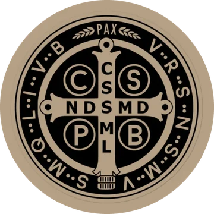

Librería San Benito
-
Santa Gertrudis
Santa Gertrudis la Grande fue una monja y mística alemana del siglo XIII, del monasterio de Helfta. Sus escritos, llenos de oración y confianza en Dios, hicieron de ella una de las grandes voces de la espiritualidad benedictina y cisterciense. Su fiesta es el 16 de noviembre.
Gertrudis la Grande nació en 1256 en Turingia, Alemania. A los cinco años fue confiada al monasterio de Helfta, que vivía según la Regla de San Benito y era un centro de oración y de estudio. Allí la educó la abadesa Gertrudis de Hackeborn, y recibió una formación muy sólida en latín, en la Biblia y en los Padres de la Iglesia.
A los 25 años tuvo una experiencia espiritual que cambió su vida: sintió la presencia de Cristo y desde entonces se entregó por completo a la oración. Gertrudis escribió con sencillez y profundidad sobre lo que vivía. Entre sus obras se destacan El heraldo del amor divino y los Ejercicios, textos muy leídos desde entonces. En ellos aparece con fuerza la devoción al Corazón de Jesús, de la cual es una de las grandes precursoras.
Sus escritos se apoyan en la liturgia y en la Sagrada Escritura, y por eso son una enseñanza para quien quiere rezar con la Iglesia. Es una de las pocas mujeres a quienes se llama "la Grande". Murió hacia 1302 en Helfta.
Su fiesta se celebra el 16 de noviembre.
San Juan Bautista
Precursor de Jesús. Predicó la conversión a orillas del río Jordán y bautizó a Jesús. Murió decapitado por orden del rey Herodes. La Iglesia celebra su nacimiento el 24 de junio y su martirio el 29 de agosto.
Juan fue el hijo de Zacarías e Isabel, pariente de la Virgen María, y nació unos seis meses antes que Jesús. El Evangelio de San Lucas cuenta que su nacimiento fue anunciado por un ángel cuando sus padres ya eran ancianos.
Vivió en el desierto de Judea, vestido con piel de camello y alimentándose de langostas y miel silvestre. Desde allí predicaba a orillas del río Jordán un bautismo de conversión y pedía a la gente que cambiara de vida. Muchos acudían a escucharlo. Un día llegó Jesús para ser bautizado, y Juan lo señaló con las palabras "Este es el Cordero de Dios que quita el pecado del mundo". Por eso, en las imágenes aparece a menudo con un cordero a sus pies, como en esta.
Juan reprendió públicamente al rey Herodes Antipas por su matrimonio con Herodías, y por eso fue encarcelado. Según el Evangelio, terminó decapitado por orden de Herodes. Jesús dijo de él que no había nacido nadie mayor entre los hombres. Fue el precursor que preparó el camino al Señor.
La Iglesia celebra su nacimiento el 24 de junio y su martirio el 29 de agosto.
San Mauro
Discípulo de San Benito desde niño. Según la tradición, caminó sobre el agua por obediencia para salvar a San Plácido de ahogarse. Llevó la regla benedictina a Francia, donde fundó el monasterio de Glanfeuil. Su fiesta es el 15 de enero.
Mauro nació en Roma hacia el año 512, hijo de un noble llamado Equicio. Con unos doce años fue confiado a San Benito en Subiaco y se convirtió en uno de sus discípulos más cercanos y en su ayudante de confianza. Con el tiempo, Benito le encargó tareas de responsabilidad dentro de la comunidad.
Es el protagonista de un episodio famoso: cuando el pequeño Plácido cayó a un lago, Benito mandó a Mauro a salvarlo, y este caminó sobre el agua hasta sacarlo, sin darse cuenta de lo que hacía. Benito lo atribuyó a la obediencia de su discípulo; Mauro, en cambio, decía que había sido por la orden de su maestro. La escena muestra el valor que la tradición benedictina da a la obediencia.
Una tradición del siglo IX, que los historiadores consideran poco segura, cuenta que Benito lo envió a Francia, donde habría fundado el monasterio de Glanfeuil, a orillas del Loira, y que murió allí hacia 584. Siglos después, los benedictinos de la Congregación de San Mauro, famosa por sus estudios y ediciones de textos antiguos, tomaron su nombre. En la imagen aparece como abad, con el báculo.
Su fiesta se celebra el 15 de enero.